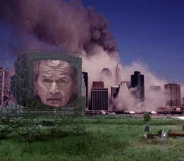

|

Big Brother Bush
Orwell had it right. His prediction just came true twenty years late.
- - - - - - - - - -
by Samuel Raider
 HE SIMILARITY has occurred to me several times in the past year. Since I was a teenager and read George Orwell's frightening masterpiece, 1984, I have been on the lookout for signs of that most unpleasant prediction coming to pass. With the ascension of George W. Bush to power, I have seen increasing evidence that Orwell's dark vision is here. HE SIMILARITY has occurred to me several times in the past year. Since I was a teenager and read George Orwell's frightening masterpiece, 1984, I have been on the lookout for signs of that most unpleasant prediction coming to pass. With the ascension of George W. Bush to power, I have seen increasing evidence that Orwell's dark vision is here.
For one thing, there's the Bush administration's propensity for renaming things with names that are the exact opposite of what they really are:
- Leave No Child Behind (a slogan stolen from the Children's Defense Fund) seems to leave most children behind.
- Another program, called "Opt-in," puts a positive spin on individual state funding for Head Start, but is really a way to shift the financial burden on already impoverished states -- ultimately leaving even more children behind.
- The Healthy Forest Act opens more and more wilderness areas to logging -- and logged forests are NOT healthy, in case you're wondering.
- The Clear Skies initiative permits increased industrial air pollution.
- Tax Cuts? Bush's tax cuts, which he says will stimulate the economy, create new jobs, and benefit us all, seem really to benefit only the rich and the very rich. I think a more appropriate name would be "special interest tax gifts."
- Then there is the current buzzword, "Sound Science," which, as reported in the Washington Post (
2/29/04
), is really "part of a lexicon used to put a pro-science veneer on policies that most of the scientific community itself tends to be up in arms about." In essence, it's a way to justify any industry friendly actions on public health and the environment by inventing the science to back it up, even if this conveniently manufactured science is diametrically opposed to prevailing, real scientific opinions and conclusions.
Can you say "doublespeak?" Well, I'm not the only one noticing this increasing trend. Just do an Internet search on "Bush AND doublespeak" to find plenty of confirmation that Orwellian visions are occurring to lots of other folks. What I've mentioned already represent some of the more obvious doublespeak examples. Bush's speeches are rife with such dissembling, lies and clever misdirection.
In Orwell's classic, the Ministry of Truth published propaganda and lies, the Ministry of Love tortured people and the Ministry of Peace waged perpetual war, which the leader, Big Brother, was constantly reassuring people was for their protection. People were spied on constantly and dissent was not tolerated, and always resulted in loss of freedom, incarceration and torture -- all without due process.
It is all sounding rather familiar. All I have to do is read the newspaper. It's happening now. Let's look at some of the basic aphorisms of Big Brother's regime:
War Is Peace
The War on Terrorism is the perpetual war that can be used to control dissent and sustain power by nurturing popular fear and hatred. The War on
Iraq
was just one element of this strategy, a strategy which divides this country, separates us from the world by ignoring world opinion, and gives Bush and his minions free reign to make war and remove our freedoms.
Freedom Is Slavery
Bush is removing our freedoms as fast as he can. The so-called Patriot Act, the Office of Homeland Security, the illegal incarcerations and removals of the checks and balances of our legal system... it's just the beginning. And if you aren't with us, you're the enemy. Straight out of Orwell... So now gay people can't get married. Tomorrow, what rights will you give away?
Ignorance Is Strength
Bush obviously believes in ignorance. He is the most ignorant president we've had in modern times, and he seems bent on keeping the American people ignorant of the truth of what he is doing. The Bush administration and the radical conservatives are squashing dissent wherever they can. People who are perceived as liberals are losing their jobs. The mainstream media is remarkably quiet on a lot of issues. People are afraid to speak out. Totalitarianism is only a step away, unless we take our country -- and our freedoms -- back!
What Democracy?
Look, for instance, at the voting machines we're all supposedly going to trust in the upcoming election. Doesn't it seem alarming -- even frightening -- that the head of Diebold Election Systems, Inc., the company who manufactures the new voting machines, is, in his own words, "committed to helping
Ohio
deliver its electoral votes to the president next year"? Isn't it outright scary that this same guy -- Walden O'Dell -- attended a strategy meeting on Bush's reelection down at Bush's
Crawford
,
Texas
ranch back in 2003? And then there's the contention by many computer experts that these machines can be relatively easily hacked? We're supposed believe in a fair election with this evidence?
But what's even more disturbing is the black hole of coverage of this situation by the mainstream media -- and the deafening silence of the Democrats who might be giving away yet another election, leaving us in the not-so tender hands of Bush and his cronies. And if you think a Bush who wants to be reelected is bad, consider one who no longer needs our votes. Of course, knowing Bush, he will push for a constitutional amendment to allow presidents to serve three terms... or more... But what about the Democrats? Why don't they do something? Perhaps that's a rhetorical question. After all, these are the same fucked up Democrats who let Bush steal the election in the first place, so what can we expect? Isn't it time we stopped, looked and listened... read the writing on the wall and got real... real pissed? Isn't it time for a class action lawsuit against these highly suspect voting machines? If we think
Florida
in 2000 was corrupt, what do we expect in 2004?
Orwell would have loved the Diebold machines.
Of course, supporters of the machines say that election fraud is always possible and that every new innovation in voting has been suspected of being vulnerable to tampering. But today we have such a credibility gap that it's no stretch to imagine the Republicans fixing an election on machines created by one of their ardent supporters, especially given that the machines are entirely electronic, with no paper trail or way to audit the results. Based on recent events, it seems as if the Republicans will do anything to win -- including hacking the computers of their Democratic rivals, fixing elections in
Florida
, and much more. I suspect that if all the facts were known, they would make Watergate seem like a college prank. And Watergate was enough to bring down a president. If ever Bush's Teflon coating is really removed, what would be revealed could be very ugly, indeed.
The Soothing Lie
Now let's look at Bush's first crop of reelection ads. They depict scenes from the 9-11 attack while Bush speaks soothingly about how he is protecting us and has the situation under control. The message is "Trust me. I have protected you. I will take care of you." Bush takes credit for being an effective leader after 9-11, as if only he could have led and protected the country in those difficult times... and now. This is hogwash. Any president would have calmed us, soothed us, commiserated with the victims and the survivors, declared a disaster, promised to bring those responsible to justice and hunted bin Laden and his organizations. But it's just possible that any other president could have done so without alienating the rest of the world, without starting a war based on lies and misinformation, without having close ties with the Saudis, whose possible connection with terrorism is arguably even more likely than
Iraq
's. What, exactly, does George W. Bush think he has done so very well? Saying stupid things like "Bring 'em on!" may impress a lot of ignorant people, but it's a foolish, boastful challenge designed to incite people, and nothing else. And Bush's 9-11 exploiting ads, which many find offensive, also do not address any genuine issues. To me they are a blatant attempt to manipulate gullible people. And they sound just like the propaganda that came out of Big Brother's Ministry of Truth.
Look... Bush IS waging perpetual war. He IS disseminating lies and misinformation. He IS a master of sincere sounding language and soothing speeches that do not tell the truth and, in fact, often mean the opposite of what they state or are entirely devoid of meaningful content. He IS refusing to testify before the 9-11 Commission. (What does he have to hide?) He IS attempting to shape society to match his zealot religious beliefs. He IS waging war on the common man. He IS waging war on the environment. He IS creating an elite and powerful class structure through his bogus and misleading tax policies, his nepotism and his blatant favoritism toward business and billionaires. He IS attempting to undermine several democratic and fundamental principals upon which this country was founded.
Bush IS Big Brother.
Or at least, he's a Big Brother wannabe. Let's kick him out and his elite friends, too. Oh, and if I suddenly disappear, you know you might be next...

|